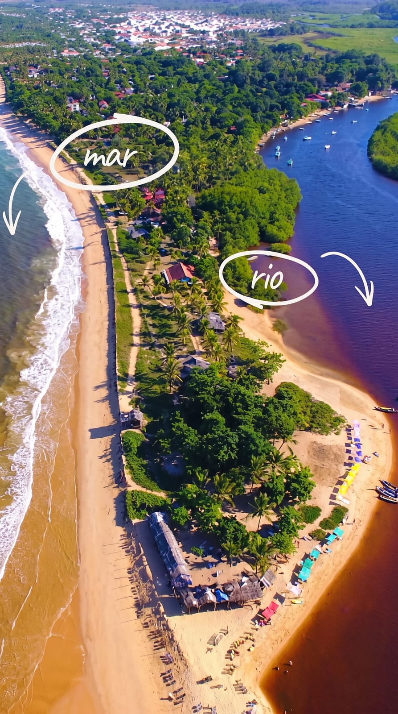
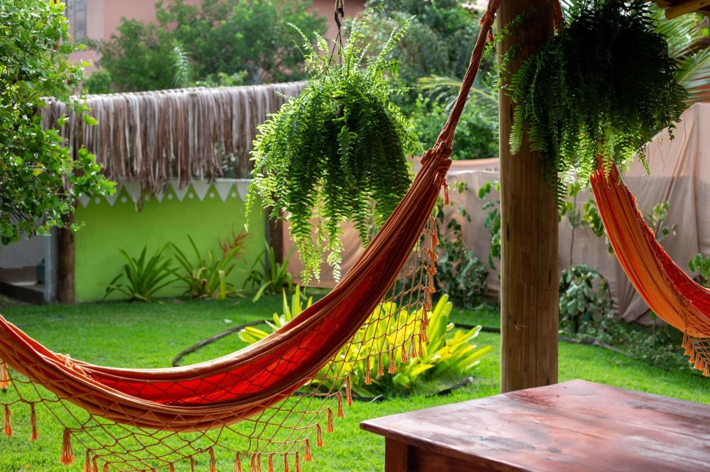

Sem carros
Os carros ficam do outro lado do rio, em Nova Caraíva. Do lado de cá, ninguém buzina: a vila se anda a pé, descalço.
Caraíva · Porto Seguro · Bahia
Uma pousada íntima entre o rio e o mar, feita para quem quer trocar o barulho do mundo pelo som das ondas.
A pousada
Na Praia Mar, cada detalhe foi pensado para você respirar fundo e lembrar que a vida também pode ser simples. Acorde sem pressa, tome um café da manhã caprichado e escolha o banho do dia: o mar aberto, com ondas, ou o rio de águas calmas e mornas.
“O luxo de acordar sem pressa, com o mar logo ali.”

Acomodações
Conforto essencial, materiais naturais e a sensação boa de estar exatamente onde você deveria. Café da manhã incluso em todas as acomodações.
Viva Caraíva
Distrito de Porto Seguro, no extremo sul da Bahia, Caraíva é uma das vilas mais antigas do Brasil — e uma das poucas que continuam do jeitinho que eram.
Os carros ficam do outro lado do rio, em Nova Caraíva. Do lado de cá, ninguém buzina: a vila se anda a pé, descalço.
A travessia é feita em canoas a remo conduzidas pelos barqueiros da vila. São poucos minutos — e você já está em outro ritmo.
Em Caraíva não existe asfalto: as ruas são de areia e a fiação elétrica é subterrânea, então não há postes. No caminho, casinhas coloridas, bares e lojinhas de artesanato.
A energia elétrica só chegou em 2007. Até hoje as noites são escuras o bastante para ver a Via Láctea da areia.
De um lado, o rio de águas calmas, mornas e cor de chá; do outro, o mar aberto com ondas. Na Praia da Barra eles se encontram.
A vila fica perto do Parque Nacional do Monte Pascoal e da Reserva Marinha do Corumbau. A região também é território do povo Pataxó, que vive em aldeias nos arredores.

Experiências
Da boia no rio ao forró na areia: a gente indica, agenda e conecta você aos guias e barqueiros locais.
Deixe a correnteza do Rio Caraíva levar você até a Praia da Barra, onde rio e mar se encontram.
Remadores da vila conduzem pelo rio e pelo mangue na hora mais dourada do dia.
4 km a pé pela areia até o Satu, ou barco até a Ponta do Corumbau e suas piscinas naturais na maré baixa.
Vivências com guias indígenas em aldeias da região: trilhas, pintura corporal e artesanato.
Sanfona, zabumba e triângulo: as noites de Caraíva são para dançar na areia até tarde.

Galeria
Os espaços para viver a pousada além do quarto. Toque nas fotos para ampliar.
Avaliações
Como chegar
o rio está esperando
Escolha as datas, garanta o seu quarto com Pix e receba a confirmação na hora.
Reserva online